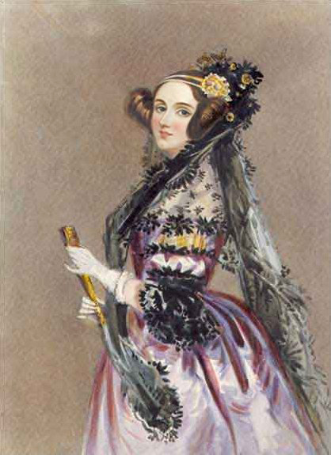

Adam Lovelace
Augusta Ada Byron King, Condessa de Lovelace, atualmente conhecida como Ada Lovelace, foi uma matemática e escritora inglesa. Hoje é reconhecida principalmente por ter escrito o primeiro algoritmo para ser processado por uma máquina, a máquina analítica de Charles Babbage- Nascimento: 10 de dezembro de 1815, Londres, Reino Unido
- Falecimento: 27 de novembro de 1852, Marylebone, Londres, Reino Unido
- Cônjuge: William King-Noel, 1st Earl of Lovelace (de 1835 a 1852)
- Livros: Flyology, Ada Lovelace, MAIS
Lovelace nasceu em 10 de dezembro de 1815 e é a única filha legítima do poeta Lord Byron e sua esposa Anne Isabella "Anabella" Byron,Lady Wentworth. Todos os outros filhos de Lorde Byron nasceram fora do casamento. Byron foi escritor de uma das versões de Don Juan.Se separou da esposa um mês depois do nascimento de Ada e deixou a Inglaterra para sempre, quatro meses depois. Acabou morrendo doente durante a Guerra da Independência Grega, quando Ada tinha oito anos de idade. A mãe de Ada promoveu o interesse de Ada em matemática e lógica, em um esforço para impedi-la de desenvolver o que ela via como a insanidade de Lord Byron. Mas Ada permaneceu interessada em seu pai e, a seu pedido, foi enterrada ao lado dele quando morreu.
Qual foi a importância de seu trabalho?
- Primeiro programa de computador em 1842
Carol Shaw
uma engenheira computacional estadunidense, notória por ser a primeira mulher desenvolvedora de jogos eletrônicos no mundo.- Nascimento: 1955 (idade 67 anos), Palo Alto, Califórnia, EUA
- Parceiro: Ralph Merkle (desde 1983)
- Formação: Universidade da Califórnia
- Prêmios: The Game Award - Industry Icon Award
Qual foi a importância de seu trabalho?
Confira mais sobre Carol Shaw.